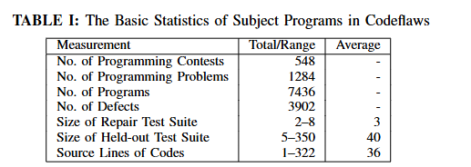
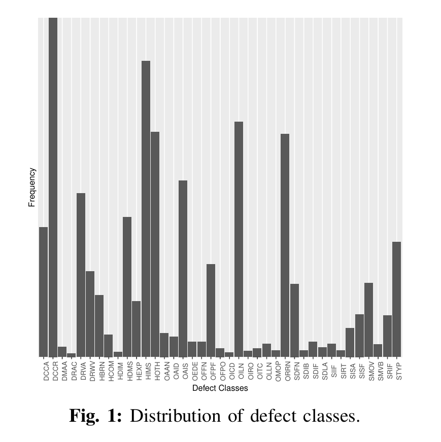

前言
导师给我的文章，有助于毕业论文，其实就是一个数据集，主要解决的问题是现有的程序修复研究无法识别故障类型
摘要
为了减少修复漏洞时所花费的时间和精力，提出了多种自动化程序修复技术。虽然这些修复工具被设计为通用的，能够解决许多软件故障，但不同的修复工具可能对某些类型的故障修复效果更佳。因此，比较不同修复工具在不同故障类型上的有效性显得尤为重要。然而，现有的自动化程序修复基准并未能深入探讨故障类型与修复工具有效性之间的关系。我们提出了Codeflaws，这是一个包含3902个缺陷，来自7436个程序的数据集，这些缺陷被自动分类到39个缺陷类别（我们将不同类型的故障称为缺陷类别，这些类别源自于程序和修复程序之间的语法差异）。
简洁
修复漏洞是一项耗时的软件维护活动。为了节省修复漏洞所花费的时间和精力，已提出了各种自动化修复工具（如GenProg [1]、PAR [2]、relifix [3]、SemFix [4]、DirectFix [5]、Angelix [6]、SPR [7]和Prophet [8]等）。尽管这些修复工具旨在修复许多类别的软件故障，但不同的修复工具可能在修复某些故障时比其他工具更为有效。已有研究[9]指出，未能识别目标故障类型是自动化程序修复研究中的一个重要陷阱。不幸的是，之前对修复工具的评估仅仅进行了单一的修复工具比较（即在一组程序上比较两种工具，而没有考虑故障类别）[6, 8]。由于现有的基准测试并未专门针对可修复缺陷的类型进行设计，因此很难通过现有基准测试来评估修复工具的效果。
我们为一个能够广泛评估修复工具的基准测试制定了以下标准：
- C1：多样化的真实缺陷类型。
- C2：大量缺陷。
- C3：大量程序。
- C4：算法复杂度高的程序。
- C5：用于验证修复正确性的广泛保留测试集。
然后就开始自卖自夸，我们CodeFlaws真是太强大啦

翻译过来就是
| 测量项 | 总计/范围 | 平均值 |
|---|---|---|
| 编程竞赛数量 | 548 | - |
| 编程问题数量 | 1284 | - |
| 程序数量 | 7436 | - |
| 缺陷数量 | 3902 | - |
| 修复测试集大小 | 2–8 | 3 |
| 保留测试集大小 | 5–350 | 40 |
| 源代码行数 | 1–322 | 36 |
然后开始拉踩了，以前的数据集太垃圾啦
先前对程序修复工具的评估[3, 6, 7, 10]是在GenProg基准测试[1]上进行的，后来该基准被扩展为ManyBugs和IntroClass基准[11]。尽管ManyBugs和IntroClass基准分别包含185个和998个缺陷（即满足C2），它们只包含9个和6个主题程序，未能满足C3。同时，IntroClass只包含简单程序（例如计算给定三个数的中位数），这些程序由初学编程课程的学生提交，且保留测试集较小（即未满足C4和C5）。由于现有的自动化程序修复基准未能满足这些标准，我们提出了一个新的基准，称为Codeflaws，以促进未来修复缺陷类别的研究。
Codeflaws基准包含了7436个来自Codeforces在线数据库的程序。表I列出了Codeflaws中主题程序的相关信息。每个编程竞赛由多个编程问题组成（3到5个问题），这些问题具有不同的难度级别。每个程序代表一个用户为某个特定问题提交的Codeforces代码。这些程序由1653个具有不同水平的用户提交。每个缺陷由一个被拒绝的提交和一个被接受的提交表示。据我们所知，在自动程序修复的评估中，我们的基准是迄今为止从最大数量的主题程序中获得的最大数量的缺陷。
为了方便未来在自动化修复工具上的实验使用Codeflaws基准，我们在我们的网站上提供了运行四种最先进修复工具（GenProg、SPR、Prophet和Angelix）所需的所有脚本。网站地址是：http://codeflaws.github.io/
方法论
主要就是讲这个数据集怎么构造的
我们修改了Codeforces-crawler [12]，开发了自定义的爬虫来从Codeforces提取数据。从一个包含按提交次数排序的编程问题列表的种子页面[13]开始，我们的爬虫系统化地提取了每个问题所有提交的信息，包括提交者的经验信息、提交时间、编程问题描述以及每个提交使用的测试用例。由于大多数现有的程序修复工具[1, 5–7]专注于修复C语言程序，我们只爬取了C语言程序。总体而言，我们爬取了超过10000个网页。
对于每个被拒绝的提交r，我们会在爬取的数据中找到同一用户针对同一编程问题的另一个被接受的提交a。每个缺陷由提交对(r, a)表示。最终，我们共获得了5544个缺陷。进一步地，我们排除了924个缺陷（因为保留测试不足）、677个缺陷（因为无法重现的错误）以及41个缺陷（由于已知的CIL bug，涉及多维数组大小的处理问题）。
然后是对于错误的分类，和其他的不同，我们codeflaws使用了差距来分类：
软件缺陷可以通过各种标准进行分类（例如，缺陷的症状、缺陷的原因和修复操作）[9]。与根据缺陷症状对软件缺陷进行分类的ManyBugs和IntroClass基准[11]不同，我们采用了更细粒度的缺陷类别分类方法，基于错误程序和修复程序之间的语法差异进行分类。我们选择这种分类方法的原因是：(1) 它允许缺陷类别的自动分类，这对于处理我们的庞大数据集至关重要；(2) 这种方法在文献中广泛应用[14–20]；(3) 它支持对不同修复工具的广泛评估。
我们修改了GumTree [21]，以在抽象语法树（AST）级别提取语法差异。AST级别的语法差异表示被更改的AST节点（即添加、删除或替换）。图1展示了Codeflaws中每个缺陷类别的分布。从图1可以看出，一些最常见的缺陷类别包括DCCR（替换常量）、HIMS（插入非分支语句）和OILN（替换逻辑运算符）。

总结
本文介绍了Codeflaws基准，旨在促进未来自动化程序修复的实证研究。由于Codeflaws涵盖了多样的缺陷类别和大量的程序，新型程序修复工具的开发者可以更加客观地衡量其工具与其他现有工具相比的相对有效性。我们相信，Codeflaws是向多个维度评估程序修复工具迈出的重要一步，其中缺陷类别是一个关键维度。
Codeflaws基准及本文提出的39个缺陷类别可以用于未来测试和调试研究中对编程缺陷的系统研究。具体的应用包括针对智能辅导系统的测试/修复技术，帮助系统以互动的方式教授编程，或者在缺陷类别之间进行有针对性的评估，以评估不同测试生成策略的效果。